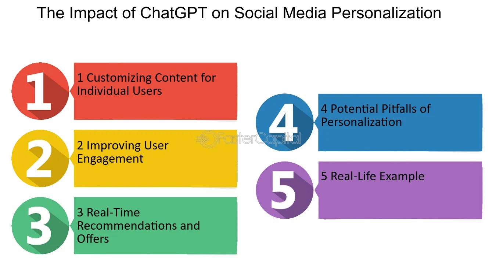
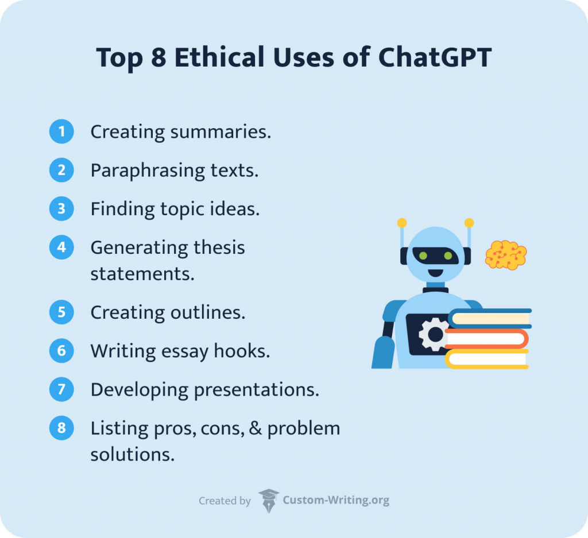

Social Implications of ChatGPT:
-

-
Bias Concerns:
- Risk of bias in information or outcomes due to training data biases.
-
Automation in Workforce:
- Transformation of tech industry with potential job displacement.
-
Ethical Use:
- Need for responsible deployment to prevent misuse.
Ethical Lenses on ChatGPT:
-
Utilitarian Perspective:
- Positive: Enhances efficiency and user satisfaction.
- Negative: Potential job displacement impacting well-being.
-
Rights-Based Perspective:
- Positive: Respects privacy and freedom of expression.
- Negative: Raises concerns about ethical violations.
Recommendations for Responsible Use:
-
User Education and Awareness:
- Implement robust initiatives to enlighten users about ChatGPT.
-
Algorithmic Bias Mitigation:
- Prioritize strategies to identify and minimize biases in ChatGPT.
-
Clear Terms of Use and Guidelines:
- Establish and communicate clear guidelines for responsible use.
-
Regulatory Oversight:
- Advocate for regulatory oversight in AI deployment, adhering to ethical standards.
-
Continuous Monitoring and Evaluation:
- Institute mechanisms for ongoing evaluation to address emerging ethical considerations.
By embracing these recommendations, stakeholders can contribute to a more ethical and socially responsible integration of ChatGPT.